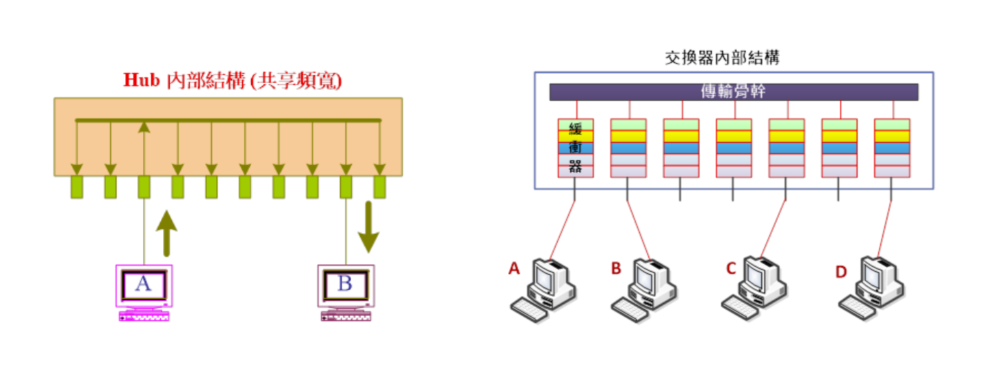
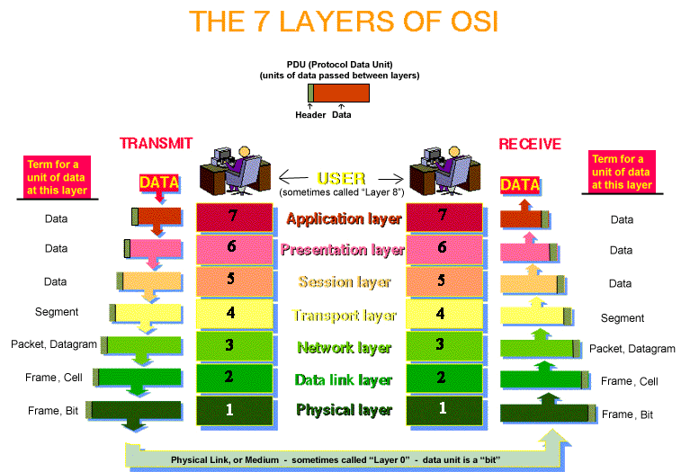
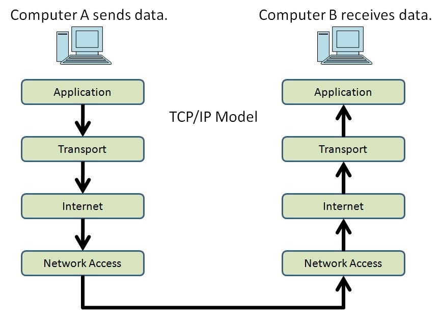
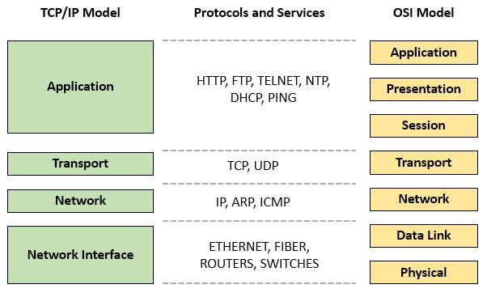
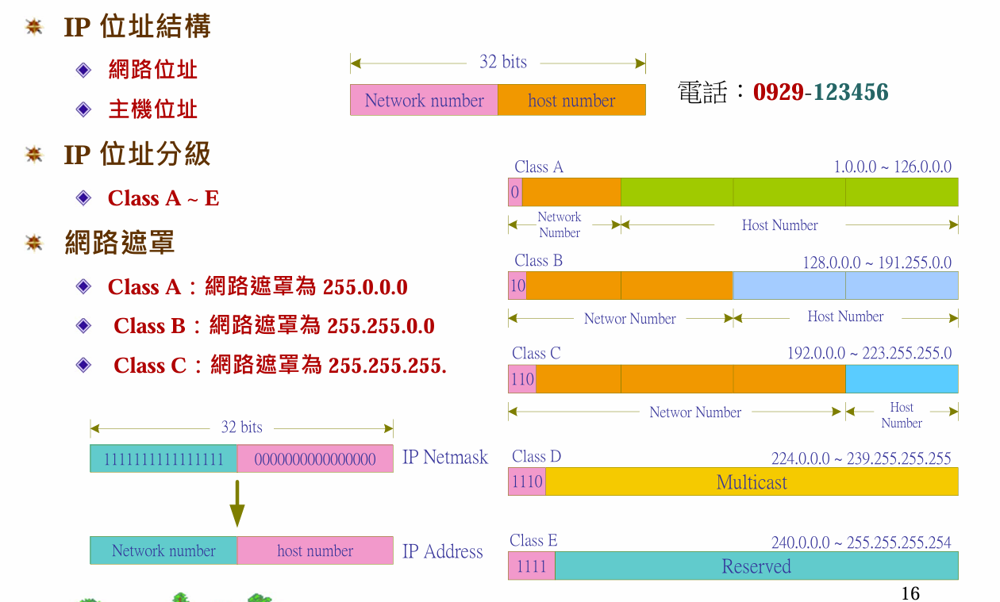

| 比較項目 | 直線(乙太網路纜線) | 跳線(Patch Cable) |
|---|---|---|
| 長度 | 較長，從幾英尺到數百英尺 | 較短，通常幾英寸到幾英尺 |
| 用途 | 永久性安裝，例如佈線到不同房間，用於高速資料傳輸的穩定連接 | 臨時性連接，例如在網路機架內互連設備、測試設備或在不同設備之間進行臨時駁接 |
| 佈建方式 | 於牆壁內或走廊固定佈線 | 位於機架內或設備附近，用於快速連接 |
| 結構 | 雙絞銅線，可最大限度減少干擾 | 也可以是雙絞線，但有不同型號（非屏蔽或屏蔽）以滿足不同用途 |
乙太網路透過標準化的IEEE 802.3協議，利用載波感應多重存取/碰撞偵測（CSMA/CD）或交換器（Switch）來管理資料傳輸。
CSMA/CD (舊式集線器網路)
概念: 每個節點共享同一條網路線，並以廣播方式傳送訊框。
運作流程:
載波感應(Carrier Sense): 傳送前先監聽網路是否有其他訊號。
多重存取(Multiple Access): 多個節點共用同一通道。
碰撞偵測(Collision Detection): 傳送過程中，若偵測到訊號碰撞（表示有多個節點同時傳送），則立即停止傳送，並發送一連串的干擾訊號「Jam signal」，告知所有設備發生了衝突。 。
隨機退避(Random Backoff)： 停止傳送後，等待一個隨機的時間，然後再次從載波偵聽開始重試。
若連續發生多次衝突，則會使用更複雜的「截斷式二進位指數退避演算法」來增加等待時間。若嘗試多次後仍失敗，則會放棄傳送。
交換器(現代網路)
概念: 使用交換器代替集線器，建立點對點的連接。
運作流程:
接收與處理(Receiving and Processing): 交換器接收到數據封包後，會根據封包內的目的MAC 位址查找內建的位址表。
轉發封包(Forwarding Frames): 將封包直接轉發到目標設備所在的埠口。
解決衝突(Collision Avoidance): 在全雙工模式下，交換器可以同時進行傳輸和接收，避免了訊號碰撞。
流量控制(Flow Control): 如果高速埠的數據傳輸到較低速埠，交換器會暫時儲存數據並發送「暫停訊框」(Pause frame) 給傳送端，讓傳送端暫停傳送以避免緩衝區溢出。
是OSI 7 layer的layer 1設備，一個將輸入訊號增強放大的類比裝置，而不考慮輸入訊號種類（是類比的還是數位的）。
優點:延長傳送距離。
缺點:
1.由於共享頻寬，每台電腦理論分配的頻寬減少，就是效能減少。
2.碰撞領域變大(碰撞所影響到的範圍變大)。
中繼器是用來加強纜線上的訊號，把訊號送得更遠，以延展網路長度。當電子訊號在電纜上傳送時，訊號強度會隨著傳遞長度的增加而遞減。因此需要中繼器將訊號重新加強以增加資料的傳送距離。
是OSI 7 layer的layer 1設備，只會放大電子訊號，但不去判斷封包的內容。目前星狀架構，hub以取代repeater。hub跟repeater運作原理一樣。
=>個人電腦和hub相接是用雙絞線的直線相接。
=>hub和hub相接是用雙絞線的跳線相接。
優點:延長傳送距離。
缺點:
1.由於共享頻寬，每台電腦理論分配的頻寬減少，就是效能減少。
2.碰撞領域變大(碰撞所影響到的範圍變大)。
由於集線器會把收到的任何數位訊號，經過再生或放大，再從集線器的所有ports送出，這會造成訊號之間碰撞的機會很大，而且訊號也可能被竊聽，並且這代表所有連到集線器的裝置，都是屬於同一個碰撞網域以及廣播網域，因此大部份集線器已被交換機取代。
改良了hub的缺點，是OSI 7 layer的layer 2設備。可以認得每個封包的來源端和目的端的MAC address。主要用在RG-58同軸電纜的網路線上。
bridge內部有forwarding table, port number和所接電腦的MAC address對照表，對於不知道該往哪裡送的封包(目的端的MAC address不在forwarding tabble)，會從bridge的每個port送出去。
flowchart LR
A[PC A 💻] <-->B
B[PC B 💻] <-->bridge
C[PC C 💻] <-->D[PC D 💻]
bridge[bridge 🖧] <--> C
特性:
增加效能:A傳給B，封包會被bridge擋住，這段時間C就可以傳資料給D。
隔離碰撞封包:若bridge左段發生碰撞，不會影響到右段。
效能好，價格便宜。是OSI 7 layer的layer 2設備，已取代hub,bridge。主要用在雙絞線的網路線上。大部分的port都是全雙工(可同時傳送接收資料)。可認得電腦在哪個port上。有學習功能，會建立forwarding table。
graph TD
S[Switch 🖧]
A[PC A 💻]
B[PC B 💻]
C[PC C 💻]
D[PC D 💻]
S <--> A
S <--> B
S <--> C
S <--> D
How to build a forwarding table? 每個乙太網路frame會含有來源端和目的端的MAC address。(OSI layer2的封包稱為frame，layer3的封包才稱為packet) 剛開始，forwarding table is empty。
重要觀念:forwarding table的建立是根據來源端的MAC address。
特性:
增加效能:A傳給B，封包會被bridge擋住，這段時間C就可以傳資料給D。
隔離碰撞封包:若switch左段發生碰撞，不會影響到右段。稱為microsegment。
比較:

| hub | switch |
|---|---|
| 共用頻寬 | 專屬頻寬 |
| 半雙工 | 全雙工 |
| 無法隔離碰撞域封包 | 可隔離碰撞域封包 |
| Layer 1 | Layer 2 |
| 複製電子訊號 | 辨別MAC位址 |
| 無表格 | 傳送表 |
是OSI 7 layer的layer 3設備，想像成一台電腦，配有兩張以上網路卡以及路由協定程式。就可以將封包從一張網路卡傳到另一張網路卡。
重要功能: 尋找路徑,隔離封包
尋找路徑:幫封包找到正確的路徑。
隔離封包:隔離廣播封包
=>router最重要的table:(routing table）or（RIB, Routing Information Base)
| 目的地網路號碼 | 目的地subnet mask | 下一站IP |
|---|---|---|
| Network ID, Network number | subnet mask | Next hop / interface |
| 就是目標位址的網路ID | 用來判斷IP所屬網絡 | 就是資料在傳送到目標位址的旅途中下一站的位址 |
router對於不知道往哪裡送的封包，會直接丟棄

為另一種模型，只有分四層。因為發展過程比OSI早，所以並沒有遵守OSI模型

比較:


| 頻段 (GHz) | 應用範圍與技術 |
|---|---|
| 0.9GHz (900MHz) | 遠距通訊、工業自動化、RFID、智慧家庭 |
| 1.8GHz - 2.1GHz | 行動通訊（3G、4G LTE 頻段） |
| 2.3GHz - 2.7GHz | LTE 擴展頻段（WiMAX、部分行動網路） |
| 3.5GHz | 5G NR、固定無線接取、衛星通訊 |
| 4.9GHz | 公共安全無線網路（政府用途） |
| 5.8GHz | 無線橋接、商業 Wi-Fi（特殊用途） |
| 6GHz | Wi-Fi 6E（更高頻寬、更低延遲） |
| 10GHz - 30GHz | 衛星通訊、雷達系統、專用無線連結 |
| 24GHz - 28GHz | 5G mmWave（高速行動網路） |
| 60GHz (毫米波) | WiGig（高速無線傳輸，如 8K 影像） |
| 77GHz | 汽車雷達（自駕車、碰撞預警） |
主要應用：物聯網 (IoT)、RFID、農業、智慧家居
特點：
典型應用場景：
主要應用：5G NR (新無線標準)，固定無線接入 (FWA)，公共安全
特點：
典型應用場景：
主要應用：5G極高速資料傳輸、短距離高頻無線傳輸、車聯網等
特點：
典型應用場景：
主要應用：無線 HDMI、虛擬現實、8K 影像流
特點：
典型應用場景：
主要應用：未來 6G 網絡、高精度雷達、超高速資料傳輸等
特點：
典型應用場景：
| 功能/特性 | Router (路由器) | Switch (交換機) |
|---|---|---|
| 主要用途 | 連接內外網，分配 IP，管理流量 | 連接內部設備，交換資料 |
| IP 分配 (DHCP) | ✅ 支援，自動分配內部 IP | 🚫 不支援，僅資料轉發 |
| 無線功能 (Wi-Fi) | ✅ 常見內建 | 🚫 不支援 |
| 設備數量支援 | 4~8 個 LAN 埠，適合小型網路 | 8+ 埠，支援更多設備 |
| 連外網 | ✅ 可以連到外網 (ISP 提供) | 🚫 僅供內部資料交換 |
| 適用範圍 | 家用/小型企業網路 | 中大型企業網路擴展 |
| 功能 | Router (路由器) | Gateway (閘道器) |
|---|---|---|
| 主要用途 | 管理內部設備，連接到外網 | 網路出入口，連接不同網路 |
| IP 分配 | 提供 DHCP，分配內部 IP | 不一定分配 IP，依設備而定 |
| 家用常見？ | ✅ 常見 | 🚫 少見 (多內建於路由器) |
| 企業常見？ | ✅ 使用 (和交換機配合) | ✅ 必備 (內建於防火牆等) |